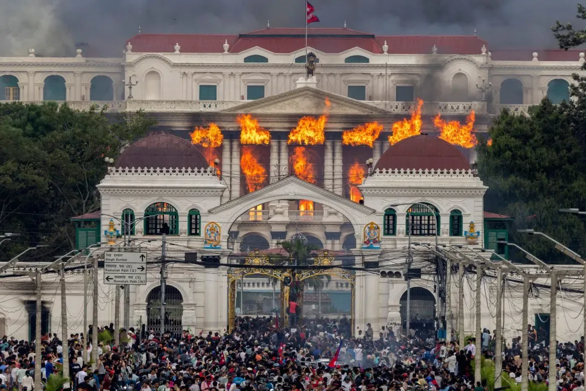
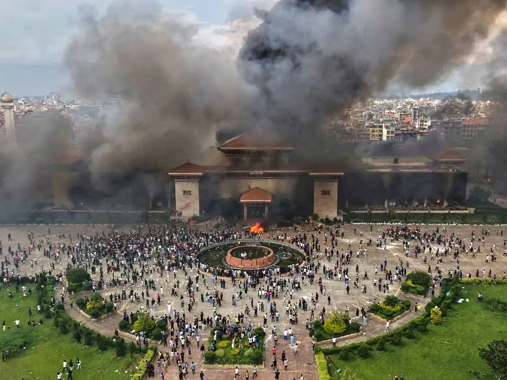

Election 2026 of Nepal
views on upcoming historic election of Nepal.


Everyone knows the GenZ protest was historic—the biggest in ~20 years, since the Maoists overthrew the monarchy. It was just soo intense, the whole nation took totally unexpected turn in just ~28 hrs. GenZ revolution was more like a rupture or sudden blast of internal tensions, which it was, rather than a revolution. Then an interim government was formed just to do another election. Compared to the scale of what happened, it just feels soo worthless. Almost like trading a diamond for a stone. At first, many people, including me, somewhere expected that we will have something structurally new, like direct voting for prime minister or president, something that reflects the magnitude of the moment.
Now we’re again seeing the big rallies of old parties and those same old people. This really makes me feel like, what was all that for?
Action or Movement won’t become “revolutionary” just because it’s loud or intense. It’s only through the result that those actions will get meaning. The outcome defines whether it was revolution or not. So if we really want to make it a “GenZ revolution”, the outcome should define whether it was actually a “revolution” or just some another protest. But we all know that it was a revolution, it was a very big demand for something new or better, so the result must justify it.
But what if result don’t? What if we see the same old parties win most seats? What if we’re back to fragile coalitions again? Would we be able to actually call it a “GenZ revolution” ? because the result is not revolutionary.
I won’t have any words to say if again I see those old parties come in front.
Many argue that “Old parties got new good people as well”. The thing is that: culture won’t change. Even if it’s new people, it’s the same old culture. It’s the same old culture where corruption is really high, and it’s the same old culture that will pollute every institutions politically. A few new faces inside the same system don’t change the system.
Plus, this isn’t about one person anyway, so no reason to vote old parties even if they got few new good people.
I’m not a big fan of Balen or Rabi, neither RSP. But this time RSP must win the election with a clear majority to form a government alone.
Almost everyone reading this knows that. So please also try your best to convince parents, relatives, closed ones, etc
Please go vote if you can—even if you have to travel some distances. You can skip another election, but this is not a normal election, it’s a fork in the road.
At the end, I want to thank and salute General Ashok Raj Sigdel, head of the Nepal Army. There are lot of examples throughout the history, that when a nation loses order, army comes and takes control. And when that happens, it rarely ends peacefully. It can mean blooshed, death of tens of thousands, years of democratic setback. Countries like Pakistan, Bangladesh, Myanmar, etc, have all experienced military takeovers, and the world knows consequences when that happens. Nepal could have gone in that direction, the situation was volatile enough.
The way that Nepal returned to normal, given the scale and intensity of what happened, says something about who we are and our nepali culture. General Ashok Sigdel could have chosen to become a supreme leader. But instead he chose a different path, and quickly our country was back to normal. 🙏